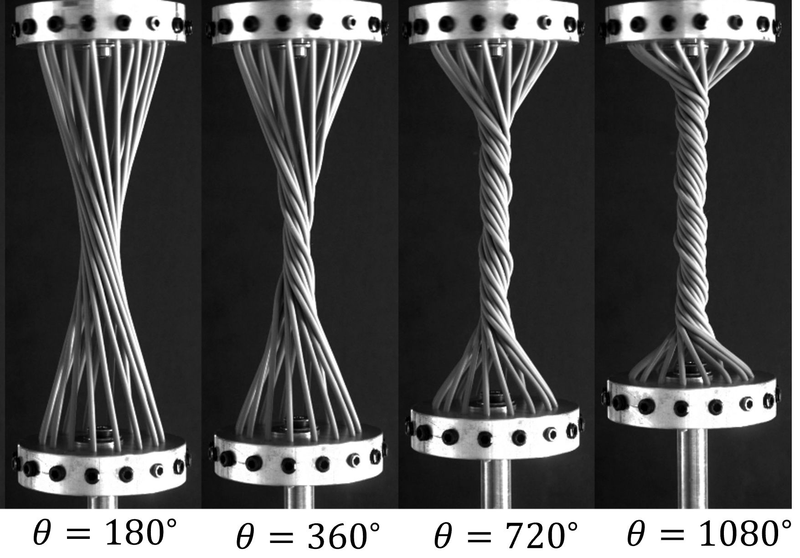
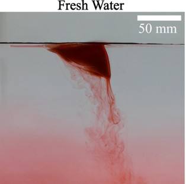

My Current Research
Currently, my primary research involves the conception, design, and experimental study of a new class of granular metamaterials, leveraging our lab's 3D-printing capabilities to engineer materials with superior impact mitigation and energy absorption properties. Concurrently, my work also delves into understanding the intricate dynamics of active filaments embedded within granular beds.
Here are the major research projects I have worked on during my PhD:
1. Crumpling: Memory in Thin Sheets
Published in PRR: Memory in cyclically crumpled sheets
In this project, I study how thin flexible sheets respond when repeatedly twisted. We use Mylar sheets rolled into a cylinder that are clamped along opposite edges and apply controlled twisting cycles allowing one end to translate freely along the frictionless linear guide. As the sheet is twisted and untwisted multiple times, it develops a complex network of ridges and valleys.
.png)

Figure 2: Twisting under progress

Figure 3: After twist
Figure 4: 3D reconstruction of a crumpled sheet obtained using a custom-built laser profilometer
At first, the deformations are highly random, but after many cycles, the sheet begins to form repeatable patterns in the same regions — indicating that the sheet "remembers" its past deformations. We quantify this memory effect by measuring the curvature field and the total crease length using laser profilometry and track how these quantities evolve over hundreds of twisting cycles.
Our experiments show that the probability of ridge formation shifts from random locations to specific preferred sites as cycling continues, revealing the gradual encoding of mechanical memory into the sheet’s structure. This research helps us understand how disorder and memory emerge in crumpled materials, and may have broader implications for understanding memory formation in soft disordered systems and the design of materials with programmable properties.
2. Bundling Architecture of Elastic Filaments Under Twist
Published in PRE: Bundling architecture in elastic filaments with applied twist
When multiple filaments are twisted together, they form complex bundled structures whose architecture depends on the interplay between elasticity, geometry, and applied twist. In this study, we experimentally and theoretically investigate how initially parallel elastic filaments spontaneously rearrange into ordered bundles under axial twisting and eventually become disordered. The filaments exhibit radial migration, resulting in an emergent internal structure that balances stretching, bending, twisting, and contact energy. Our results provide new insights into the mechanics of natural and engineered fiber assemblies, with implications for materials design, biology, and soft matter physics.
3. Self-Propulsion of Floating Ice Block on Water Surface
Read the article in arXiv: Self-Propulsion of Floating Ice Blocks
